Securing APIs with OpenID Connect and Red Hat Single Sign-On} on Red Hat OpenShift API Management
In this lab you will learn how to secure an API managed with 3scale API Management using OpenID Connect (OIDC), using the Red Hat Single Sign-On instance of Red Hat OpenShift API Management as identity provider.
1. Create a Realm on Red Hat Single Sign-On
-
Access the RH-SSO console through the Application Launcher in the OpenShift Dedicated console. This the square icon in the top-right.
-
Select API Management SSO to access the Red Hat Single Sign-On console.
-
Log in to the RH-SSO administration console. Login using your IdP.
-
You are redirected to the overview page of the Master realm.
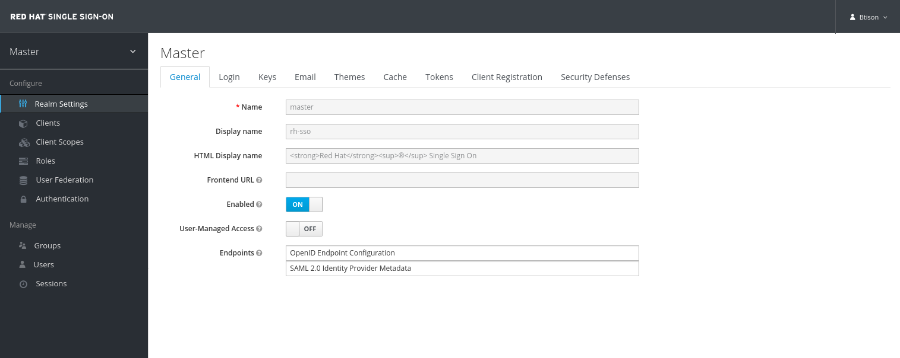 -
To create a new realm, hover over the realm drop-down in the menu and click the Add realm button.
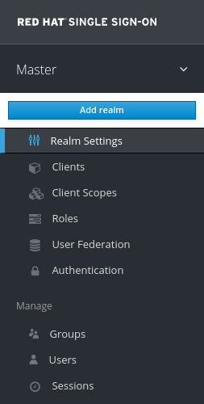 -
Give a name to your realm, for example
3scale-realm. -
Click the Create button to create the realm.
-
You are redirected to the overview screen of your new realm.
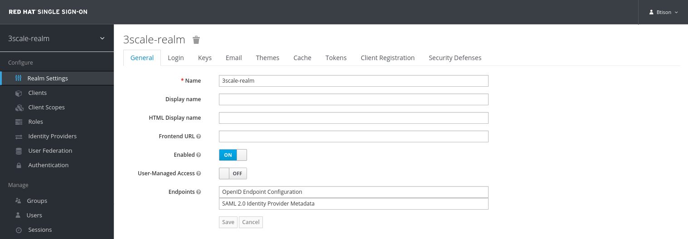 -
The next step is to create a user for the realm. In the realm menu, select Users.
-
On the users overview page, click the Add user button on the right to create a new user.
-
Fill in the form. Click Save to create the user.
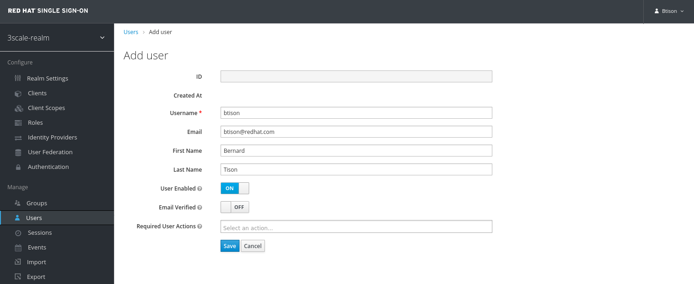 -
Open the Credentials tab and set a password for the new user. Make sure Temporary is set to
OFF. Click Set Password to save the password.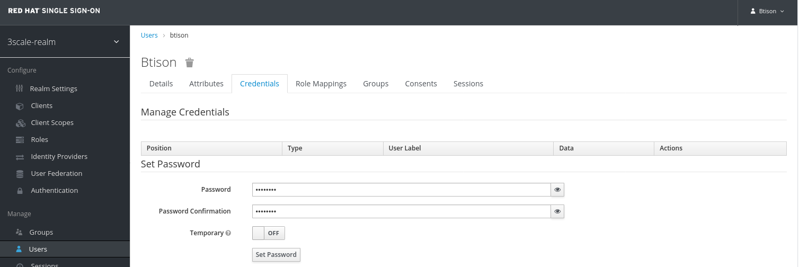
2. 3scale and Red Hat Single Sign-On Integration
Every OIDC secured application in 3scale needs a corresponding SSO client in the RH-SSO realm. The details between the API managed application should match the details of the corresponding SSO client.
Subsequently, it is important to automate the synchronization between 3scale and RH-SSO.
The zync component in 3scale is the component responsible for this synchronization. Its purpose is to synchronize API managed applications to external systems such as RH-SSO. It does so in an automated manner by pushing updates to external systems every time a state change occurs within an API managed application.
In this section, you create a SSO client in the realm of your RH-SSO server that will be leveraged by the zync component of the 3scale API management platform. Zync will use the new SSO client to synchronize between OIDC secured applications and their corresponding SSO clients in RH-SSO.
The name of this new SSO client will be called: zync-sso. The zync-sso client will be configured to utilize the OIDC client credentials flow. Via the zync-sso client, the zync component will retrieve an access token that then allows for the creation and update of new SSO clients through the RH-SSO API.
|
Within OIDC and OAuth, the Client Credentials Flow is used for server-to-server scenarios. In this scenario, the client application (in our case the 3scale zync component) is a confidential client that’s acting on its own, not on behalf of the user. It’s more of a service account type of scenario. It’s a back channel flow to obtain an access token using the client’s credentials. A good explanation of the different OIDC flows can be found here: https://developer.okta.com/blog/2017/06/21/what-the-heck-is-oauth |
Create zync_sso client
-
In the RH-SSO console, make sure you are on the page of the realm you created in the previous step.
-
Click Clients to open the realm clients overview page,
-
Click Create to create a new realm client.
-
In the Add Client page, enter the following values:
-
Client ID:
zync-sso -
Client Protocol:
openid-connect -
Root URL: leave blank
-
-
Click Save to create the realm client.
-
You are redirected to the client Settings page.
-
Make the following changes to the client settings:
-
Set Access Type to
confidential. -
Set Standard Flow Enabled to
OFF. -
Set Direct Access Grants Enabled to
OFF. -
Set Service Accounts Enabled to
ON.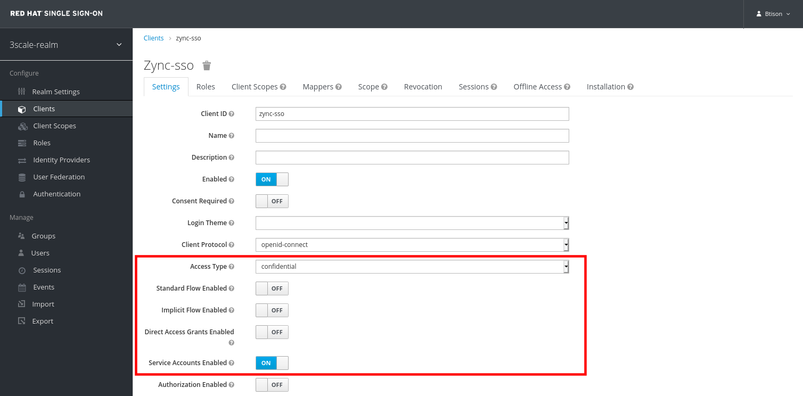
-
-
Scroll down and click Save to save the client configuration.
-
Navigate to the Service Account Roles tab of the client settings.
-
In the Client Roles dropdown, type
realm-management. -
Ensure that the
manage-clientsrole is listed as one of the Assigned Roles.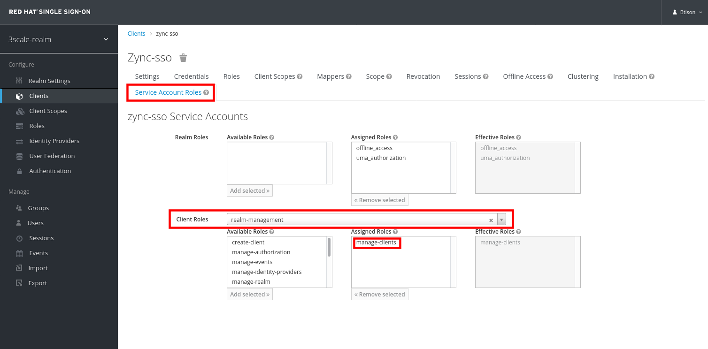 -
Take note of the Client ID - which is
zync-ssounless you changed the value. -
Take note of the Client Secret. You can find the value of the Client Secret on the Credentials page of the client.
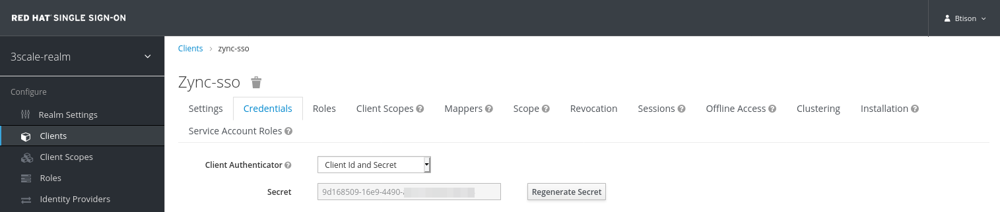
3. Create API in 3scale API Management and Configure to Use OpenID Connect
In this section of the lab you configure an API on 3scale secured with OpenID Connect.
The backend for this new API is the Quarkus application which you leveraged in previous labs as well.
-
Log in to 3scale API Management using your configured IdP.
-
Navigate to Dashboard, select the Products tab and click New Product.
-
On the New Product page:
-
Select Define manually
-
Name:
RHOAM API OIDC -
System Name:
rhoam_api_oidc
-
-
Select Create Product to create the API.
-
Create an application plan for the new API:
-
Name:
RHOAM OIDC Basic Plan -
System Name:
rhoam_oidc/basic
-
-
Publish the application plan.
-
Add a backend to the API. Click on the Integration → Backends link in the menu. On the backend page, click Add Backend. Select the
rhoam-openapi Backendbackend, and set the path to/. Click Add to Product to add the backend to the API. -
The default mapping rules allow all
GEToperations, which is sufficient for this lab. -
On the Settings page of the API:
-
Select
APIcast 3scale managed. -
Leave the Staging Public Base URL and Production Public Base URL to the default values.
-
-
In the Authentication section, select
OpenID Connect. -
Scroll down and fill in the details for the authentication settings:
-
OpenID Connect Issuer Type:
Red Hat Single Sign-On -
Set the value of OpenID Connect Issuer to the URL of your realm on RH-SSO, to which you add the zync_sso client ID and secret for authentication.
https://<ZYNC_SSO_CLIENT_ID>:<ZYNC_SSO_CLIENT_SECRET>@<RHSSO_HOSTNAME>/auth/realms/<SSO_REALM>
-
<ZYNC_SSO_CLIENT_ID>: client ID of the SSO client you created in the previous section. -
<ZYNC_SSO_CLIENT_SECRET>: client secret of the SSO client you created in the previous section. -
<RHSSO_HOSTNAME>: Host name of the RH-SSO server. Something likekeycloak-redhat-rhoam-user-sso.apps.<OPENSHIFT_BASE_URL>. -
<SSO_REALM>: name of the realm you created previously.This URL serves the following purposes:
-
Provides zync with the URL to add or update SSO clients in RH-SSO.
-
Provides APIcast with the URL to RH-SSO to retrieve the public key of the RH-SSO realm in order to verify the JWT token.
-
-
-
In the OIDC AUTHORIZATION FLOW section, ensure that the
Authorization Code Flowcheckbox is checked.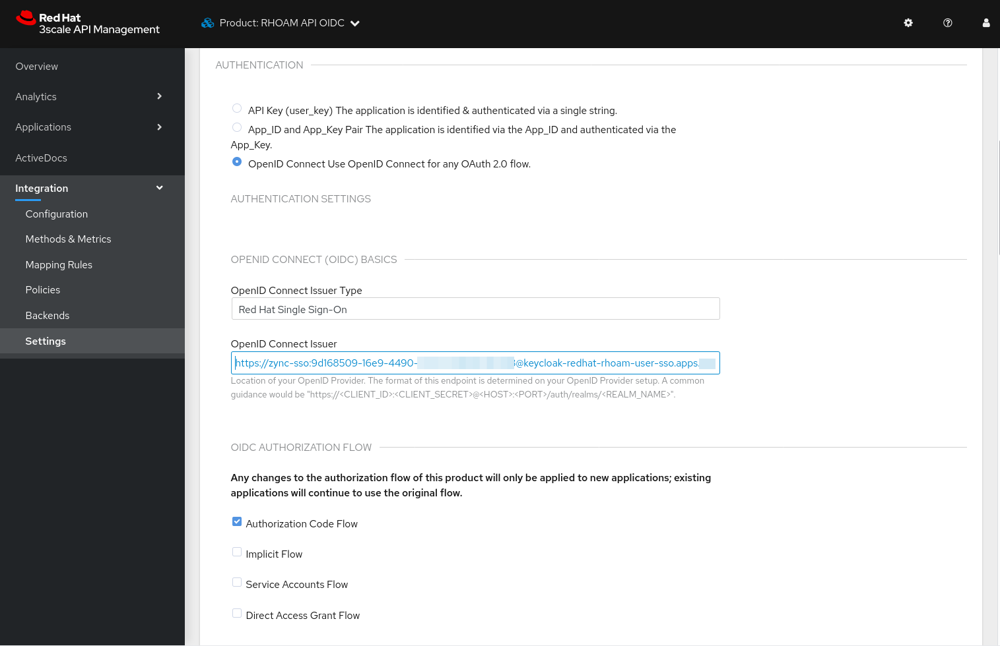 -
Scroll down and change Credentials Location to As HTTP Headers.
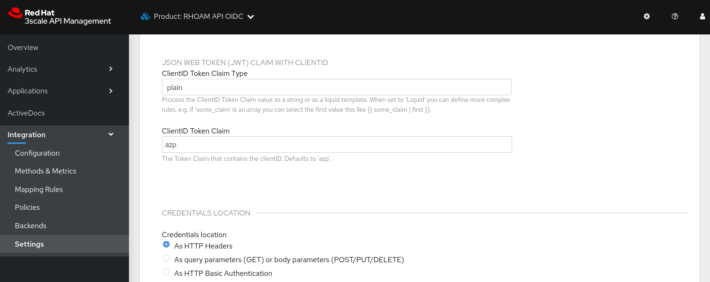
-
-
Click Update Product to update the settings.
4. Create Application
In this section of the lab you create an application for the RHOAM API OIDC API.
-
Log in to 3scale API Management using your configured IdP.
-
Navigate to Audience → Accounts → Listing, and click Create to create a new account.
-
On the Create New Account Page, enter the following values:
-
Username:
test-oidc -
Email: a valid email address
-
Password: an easy to remember password
-
Organization/Group Name:
TestOIDC
-
-
Click Create to create the user and account.
-
Create a new Application for the TestOIDC account.
-
Application Plan:
RHOAM OIDC Basic Plan -
Name:
TestOIDC RHOAM App
-
-
On the overview page for the application, click Edit in the API Credentials section.
-
Set the redirect URL to
https://www.getpostman.com/oauth2/callback.
-
This redirect URL will become useful later in this lab when you test using the Authorization Code OAuth2 flow.
-
Notice that the API Credentials for this application do no consist of a user key, but rather a Client ID and a Client Secret.
-
5. Verify Application Client in RH-SSO
As a result of creating the application, the 3scale zync component has created a new realm client for your realm in the RH-SSO server.
-
Log in to RH-SSO, select the 3scale realm and navigate to the Clients section.
-
Notice that a new client has been created with a client ID corresponding to the client ID of the TestOIDC RHOAM App application in 3scale.
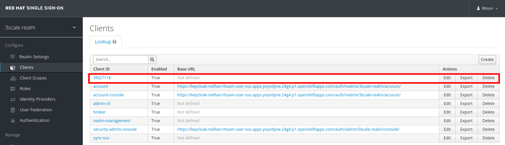 -
Click the Edit button for the new client.
-
The client name corresponds to the name of the application in 3scale.
-
The redirect URL matches the URL you specified in the API credentials.
-
Standard Flow is enabled, which matches the Authorization Code Flow setting specified in the API definition.
-
6. Test the OIDC Secured API
6.1. Promote to Staging and Production APIcast
-
In the 3scale Admin Portal, navigate to Product: RHOAM API OIDC → Integration → Configuration.
-
Promote the API to the staging and production APIcast.
6.2. Test the API with Authorization Code flow.
Install and Configure Postman
-
Install Postman on your local workstation if you don’t have it installed yet. Navigate to
https://www.postman.com/downloads/and download the version matching your OS. At the moment of writing the latest version is 8.2.1. Untar or unzip the downloaded archive, and add thePostmanbinary to your PATH. Verify that the installation was successful. The response of thewhichcommand should point to the Postman executable binary.$ which Postman
-
Open the Postman application. If this is the first time you used Postman, expect to be greeted with a sign-up page. Feel free to skip this stage and go directly to the application.
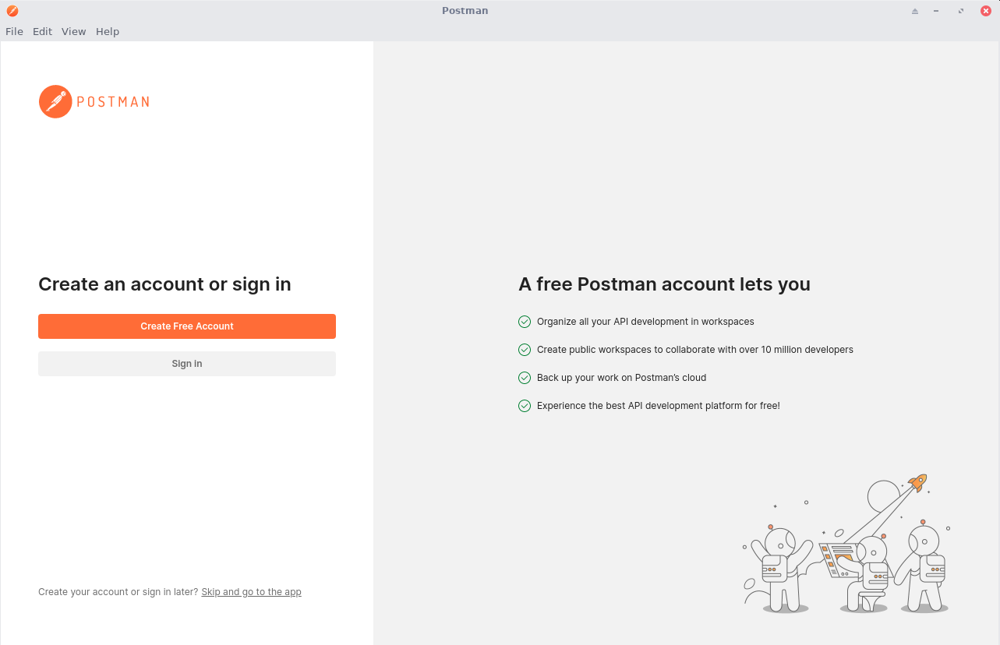 -
Expect to see the landing page of the Postman application:
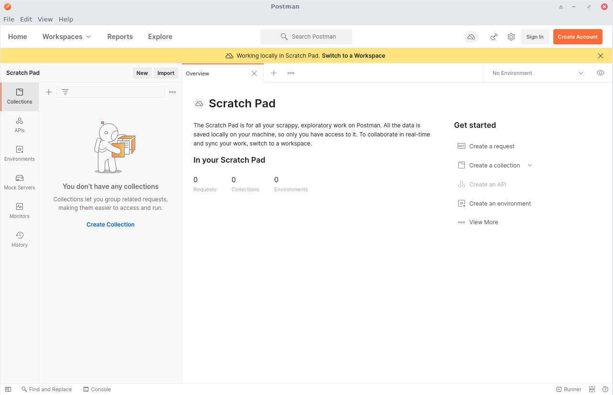 -
Click Create a request.
-
Enter the URL to the production APIcast of the RHOAM API OIDC application in the Enter request URL text box. Add the
/fruitspath to the URL.The APIcast URL can be obtained from the Configuration page of the API in the 3scale API Management console.
-
Click Send.
-
Expect a
403 Forbiddenreturn code, and a responseAuthentication parameters missing.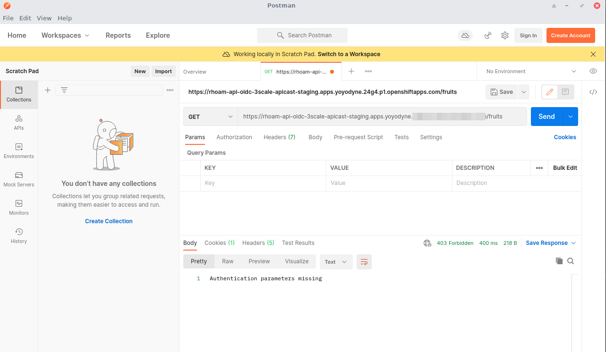 -
Configure Postman to obtain an access token from the RH-SSO server.
-
Click the Authorization tab.
-
From the Type field, select OAuth 2.0.
-
Enter the following values into the Configure New Token dialog box:
-
Token Name:
RHOAM API Access Token -
Grant Type:
Authorization Code -
Callback URL:
https://www.getpostman.com/oauth2/callback -
Auth URL:
https://<RHSSO_HOSTNAME>/auth/realms/<SSO_REALM>/protocol/openid-connect/auth -
Access Token URL:
https://<RHSSO_HOSTNAME>/auth/realms/<SSO_REALM>/protocol/openid-connect/token -
ClientID: The value of the Client ID of the Application you created for the API.
-
Client Secret: The value of Client Secret of the Application you created for the API.
-
Scope :
openid -
Client Authentication :
Send as Basic Auth header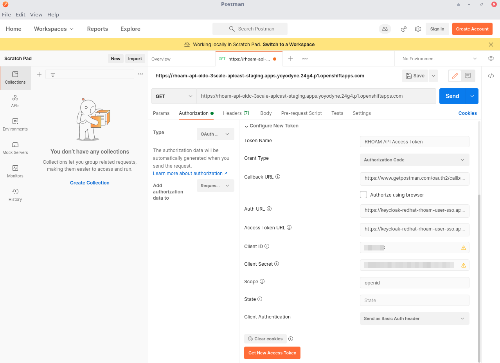
-
-
-
Click Get New Access Token.
-
A new dialog box appears that shows the login screen for your realm on the RH-SSO server.
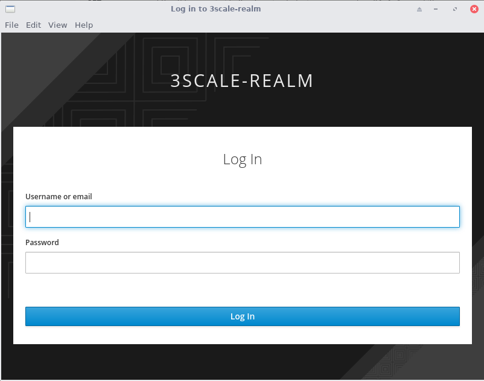
-
-
Enter the username and password of the realm user you created previously. Click Log In.
-
A new pop-up appears that shows the details of the Access Token that was obtained from the RH-SSO server.
Click Use Token
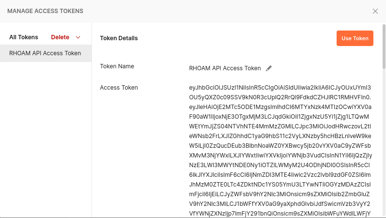 -
Back on the request page, click Send.
This time expect a successful response.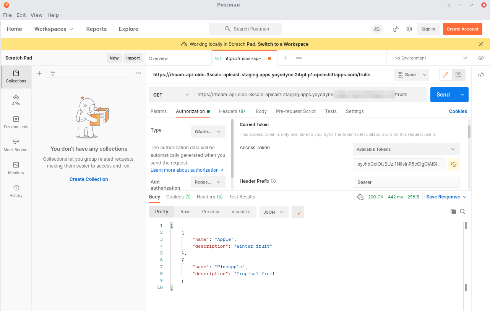
Congratulations, you’ve secured your API on Red Hat OpenShift API Management with Red Hat Single Sign-On and OpenID Connect!